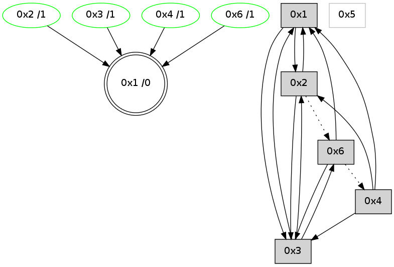

>> << IDX [start] -100 -25 -5 +0 +5 +25 +100 [700.419559002]
 Previous packets
----------------------------------------------------------------------
695.006369 beacon01(adaf) #0 coord=01,02,05,03,04,06 cycle=432.0ms assoc
-- color-indic=0 64 3e a8
695.016330 beacon02(adaf) #0 coord=01,02,05,03,04,06 cycle=432.0ms assoc 64 6f 57
695.026329 beacon05(adaf) #0 coord=01,02,05,03,04,06 cycle=432.0ms assoc 64 c9 7d
695.036329 beacon03(adaf) #0 coord=01,02,05,03,04,06 cycle=432.0ms assoc 64 55 59
695.046330 beacon04(adaf) #0 coord=01,02,05,03,04,06 cycle=432.0ms assoc 64 f3 73
695.056331 beacon06(adaf) #0 coord=01,02,05,03,04,06 cycle=432.0ms assoc 64 87 6f
695.067986 [Hello(4): seq=497 sym=2,3,1 sysInfo= stat=2:3,0,0,1/3:4,0,6,3/1:14,0,3,0]
695.071627 [Hello(1): seq=396 sym=3,6 sysInfo= stat=3:6,0,3,3/6:4,0,7,0]
695.073436 [Hello(2): seq=989 sym=1,3 asym=6 sysInfo= stat=1:12,0,1,0/3:5,0,0,2/6:11,0,4,0]
----------------------------------------------------------------------
695.498479 beacon01(adaf) #0 coord=01,02,05,03,04,06 cycle=432.0ms assoc
-- color-indic=0 64 fa c7
695.508441 beacon02(adaf) #0 coord=01,02,05,03,04,06 cycle=432.0ms assoc 64 ab 38
695.518440 beacon05(adaf) #0 coord=01,02,05,03,04,06 cycle=432.0ms assoc 64 0d 12
695.528441 beacon03(adaf) #0 coord=01,02,05,03,04,06 cycle=432.0ms assoc 64 91 36
695.538440 beacon04(adaf) #0 coord=01,02,05,03,04,06 cycle=432.0ms assoc 64 37 1c
695.548441 beacon06(adaf) #0 coord=01,02,05,03,04,06 cycle=432.0ms assoc 64 43 00
695.560113 [Hello(3): seq=496 sym=2,1,6 sysInfo= stat=2:4,0,1,1/1:13,0,15,0/6:10,0,9,0]
695.564364 [STC(1) #0.23 to-color d=0]
----------------------------------------------------------------------
695.990587 beacon01(adaf) #0 coord=01,02,05,03,04,06 cycle=432.0ms assoc
-- color-indic=0 64 b6 77
696.000550 beacon02(adaf) #0 coord=01,02,05,03,04,06 cycle=432.0ms assoc 64 e7 88
696.010549 beacon05(adaf) #0 coord=01,02,05,03,04,06 cycle=432.0ms assoc 64 41 a2
696.020549 beacon03(adaf) #0 coord=01,02,05,03,04,06 cycle=432.0ms assoc 64 dd 86
696.030549 beacon04(adaf) #0 coord=01,02,05,03,04,06 cycle=432.0ms assoc 64 7b ac
696.040548 beacon06(adaf) #0 coord=01,02,05,03,04,06 cycle=432.0ms assoc 64 0f b0
696.051376 [Hello(1): seq=397 sym=2,3 sysInfo= stat=2:0,0,0,0/3:6,0,3,3]
696.053781 [Hello(4): seq=498 sym=2,3,1 sysInfo= stat=2:4,0,0,1/3:5,0,6,3/1:15,0,4,0]
696.055971 [STC(3)->1 #0.23 stable,to-color d=1]
696.058405 [STC(2)->1 #0.23 stable,to-color d=1]
696.061018 [TreeStatus(2)-.->1 #0.23 stable child=1]
696.062169 [STC(4)->1 #0.23 stable,to-color d=1]
696.064452 [TreeStatus(4)-.->1 #0.23 stable child=1]
696.068740 [TreeStatus(3)-.->1 #0.23 stable child=1]
----------------------------------------------------------------------
696.482695 beacon01(adaf) #0 coord=01,02,05,03,04,06 cycle=432.0ms assoc
-- color-indic=0 64 72 18
696.492655 beacon02(adaf) #0 coord=01,02,05,03,04,06 cycle=432.0ms assoc 64 23 e7
696.502657 beacon05(adaf) #0 coord=01,02,05,03,04,06 cycle=432.0ms assoc 64 85 cd
696.512655 beacon03(adaf) #0 coord=01,02,05,03,04,06 cycle=432.0ms assoc 64 19 e9
696.522656 beacon04(adaf) #0 coord=01,02,05,03,04,06 cycle=432.0ms assoc 64 bf c3
696.532658 beacon06(adaf) #0 coord=01,02,05,03,04,06 cycle=432.0ms assoc 64 cb df
696.544327 [Hello(3): seq=497 sym=2,1,6 sysInfo= stat=2:4,0,1,1/1:13,0,0,0/6:10,0,9,0]
----------------------------------------------------------------------
696.974803 beacon01(adaf) #0 coord=01,02,05,03,04,06 cycle=432.0ms assoc
-- color-indic=0 64 3f 1f
696.984764 beacon02(adaf) #0 coord=01,02,05,03,04,06 cycle=432.0ms assoc 64 6e e0
696.994766 beacon05(adaf) #0 coord=01,02,05,03,04,06 cycle=432.0ms assoc 64 c8 ca
697.004765 beacon03(adaf) #0 coord=01,02,05,03,04,06 cycle=432.0ms assoc 64 54 ee
697.014765 beacon04(adaf) #0 coord=01,02,05,03,04,06 cycle=432.0ms assoc 64 f2 c4
697.024766 beacon06(adaf) #0 coord=01,02,05,03,04,06 cycle=432.0ms assoc 64 86 d8
697.035864 [Hello(1): seq=398 sym=2,3 sysInfo= stat=2:0,0,1,1/3:7,0,4,4]
----------------------------------------------------------------------
697.466911 beacon01(adaf) #0 coord=01,02,05,03,04,06 cycle=432.0ms assoc
-- color-indic=0 64 fb 70
697.476872 beacon02(adaf) #0 coord=01,02,05,03,04,06 cycle=432.0ms assoc 64 aa 8f
697.496872 beacon03(adaf) #0 coord=01,02,05,03,04,06 cycle=432.0ms assoc 64 90 81
697.506872 beacon04(adaf) #0 coord=01,02,05,03,04,06 cycle=432.0ms assoc 64 36 ab
697.528561 [Hello(3): seq=498 sym=2,1,6 sysInfo= stat=2:4,0,1,1/1:14,0,0,0/6:11,0,9,0]
----------------------------------------------------------------------
697.959018 beacon01(adaf) #0 coord=01,02,05,03,04,06 cycle=432.0ms assoc
-- color-indic=0 64 b7 c0
697.968979 beacon02(adaf) #0 coord=01,02,05,03,04,06 cycle=432.0ms assoc 64 e6 3f
697.978980 beacon05(adaf) #0 coord=01,02,05,03,04,06 cycle=432.0ms assoc 64 40 15
697.988979 beacon03(adaf) #0 coord=01,02,05,03,04,06 cycle=432.0ms assoc 64 dc 31
697.998980 beacon04(adaf) #0 coord=01,02,05,03,04,06 cycle=432.0ms assoc 64 7a 1b
698.008981 beacon06(adaf) #0 coord=01,02,05,03,04,06 cycle=432.0ms assoc 64 0e 07
698.023867 [STC(1) #0.24 to-color d=0]
----------------------------------------------------------------------
698.451126 beacon01(adaf) #0 coord=01,02,05,03,04,06 cycle=432.0ms assoc
-- color-indic=0 64 73 af
698.461086 beacon02(adaf) #0 coord=01,02,05,03,04,06 cycle=432.0ms assoc 64 22 50
698.471086 beacon05(adaf) #0 coord=01,02,05,03,04,06 cycle=432.0ms assoc 64 84 7a
698.481087 beacon03(adaf) #0 coord=01,02,05,03,04,06 cycle=432.0ms assoc 64 18 5e
698.491088 beacon04(adaf) #0 coord=01,02,05,03,04,06 cycle=432.0ms assoc 64 be 74
698.501087 beacon06(adaf) #0 coord=01,02,05,03,04,06 cycle=432.0ms assoc 64 ca 68
698.512927 [STC(4)->1 #0.24 stable,to-color d=1]
698.515518 [TreeStatus(4)-.->1 #0.24 stable child=1]
698.516866 [Hello(3): seq=499 sym=2,1,6 sysInfo= stat=2:4,0,1,1/1:14,0,1,0/6:12,0,9,0]
698.520536 [STC(3)->1 #0.24 stable,to-color d=1]
698.521990 [STC(6)->1 #0.24 stable,to-color d=1]
698.523928 [TreeStatus(3)-.->1 #0.24 stable child=1]
698.527621 [TreeStatus(6)-.->1 #0.24 stable child=1]
----------------------------------------------------------------------
698.943233 beacon01(adaf) #0 coord=01,02,05,03,04,06 cycle=432.0ms assoc
-- color-indic=0 64 2d ce
698.953196 beacon02(adaf) #0 coord=01,02,05,03,04,06 cycle=432.0ms assoc 64 7c 31
698.963195 beacon05(adaf) #0 coord=01,02,05,03,04,06 cycle=432.0ms assoc 64 da 1b
698.973194 beacon03(adaf) #0 coord=01,02,05,03,04,06 cycle=432.0ms assoc 64 46 3f
698.983194 beacon04(adaf) #0 coord=01,02,05,03,04,06 cycle=432.0ms assoc 64 e0 15
698.993196 beacon06(adaf) #0 coord=01,02,05,03,04,06 cycle=432.0ms assoc 64 94 09
699.004303 [Hello(1): seq=400 sym=2,3 sysInfo= stat=2:0,0,2,2/3:9,0,5,5]
699.008524 [Hello(4): seq=501 sym=2,3,1 sysInfo= stat=2:4,0,0,1/3:8,0,7,5/1:0,0,5,0]
----------------------------------------------------------------------
699.435342 beacon01(adaf) #0 coord=01,02,05,03,04,06 cycle=432.0ms assoc
-- color-indic=0 64 e9 a1
699.445302 beacon02(adaf) #0 coord=01,02,05,03,04,06 cycle=432.0ms assoc 64 b8 5e
699.455302 beacon05(adaf) #0 coord=01,02,05,03,04,06 cycle=432.0ms assoc 64 1e 74
699.465303 beacon03(adaf) #0 coord=01,02,05,03,04,06 cycle=432.0ms assoc 64 82 50
699.475302 beacon04(adaf) #0 coord=01,02,05,03,04,06 cycle=432.0ms assoc 64 24 7a
699.485303 beacon06(adaf) #0 coord=01,02,05,03,04,06 cycle=432.0ms assoc 64 50 66
699.496977 [Hello(3): seq=500 sym=2,1,6 sysInfo= stat=2:4,0,1,1/1:15,0,1,0/6:13,0,9,1]
----------------------------------------------------------------------
699.927451 beacon01(adaf) #0 coord=01,02,05,03,04,06 cycle=432.0ms assoc
-- color-indic=0 64 a5 11
699.937412 beacon02(adaf) #0 coord=01,02,05,03,04,06 cycle=432.0ms assoc 64 f4 ee
699.947412 beacon05(adaf) #0 coord=01,02,05,03,04,06 cycle=432.0ms assoc 64 52 c4
699.957413 beacon03(adaf) #0 coord=01,02,05,03,04,06 cycle=432.0ms assoc 64 ce e0
699.967413 beacon04(adaf) #0 coord=01,02,05,03,04,06 cycle=432.0ms assoc 64 68 ca
699.977415 beacon06(adaf) #0 coord=01,02,05,03,04,06 cycle=432.0ms assoc 64 1c d6
699.989099 [Hello(4): seq=502 sym=2,3,1 sysInfo= stat=2:4,0,0,1/3:9,0,7,5/1:0,0,5,0]
699.995833 [Hello(1): seq=401 sym=2,3 sysInfo= stat=2:0,0,2,2/3:10,0,5,5]